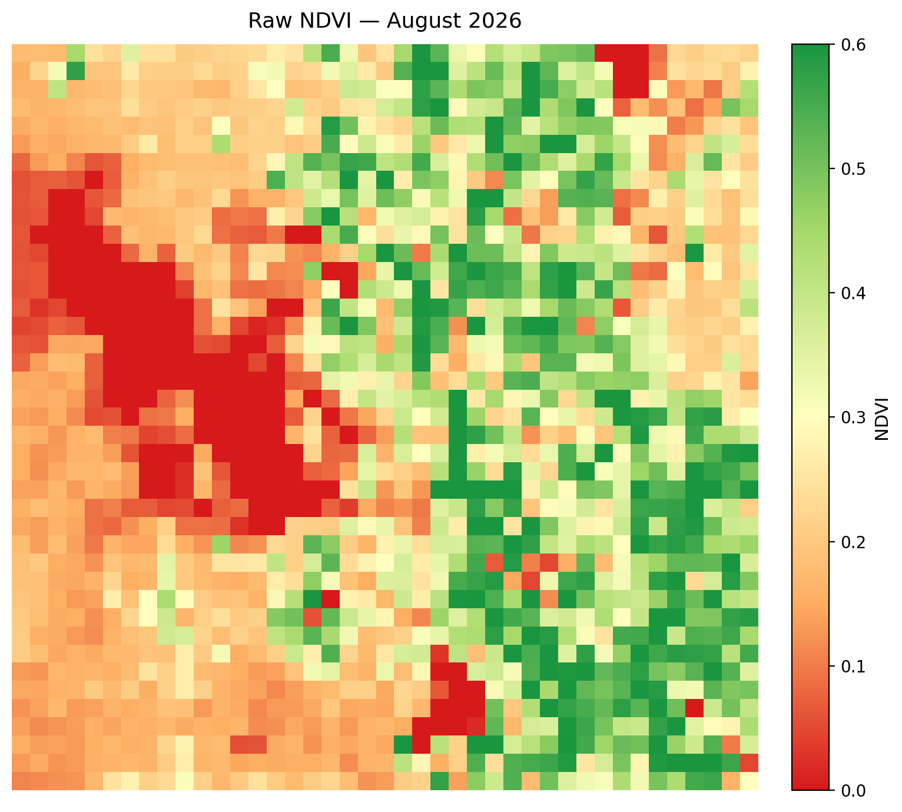
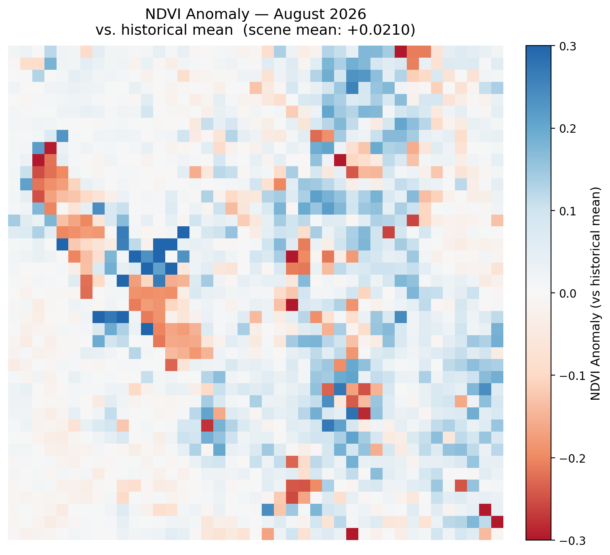
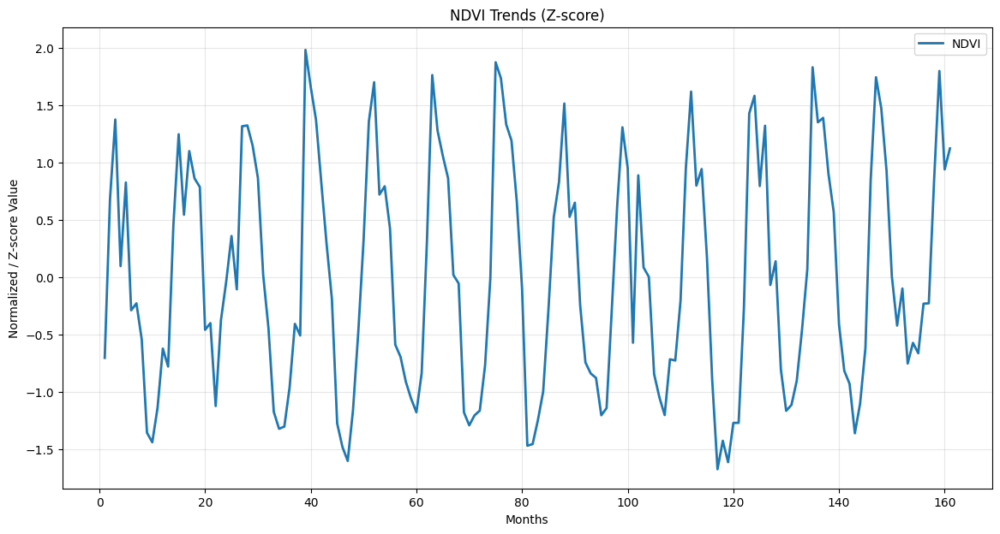
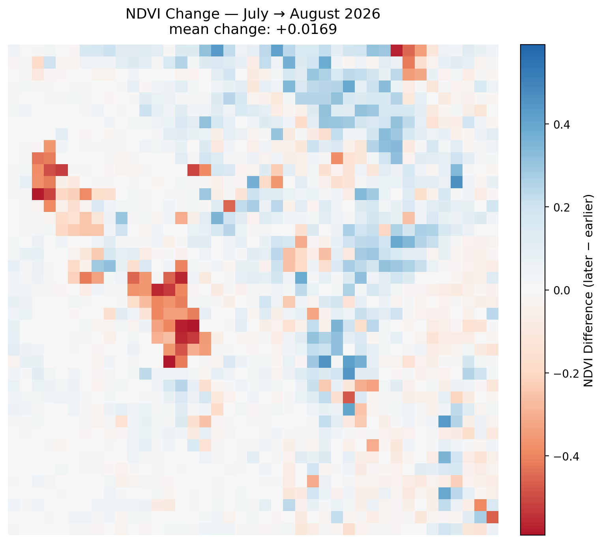
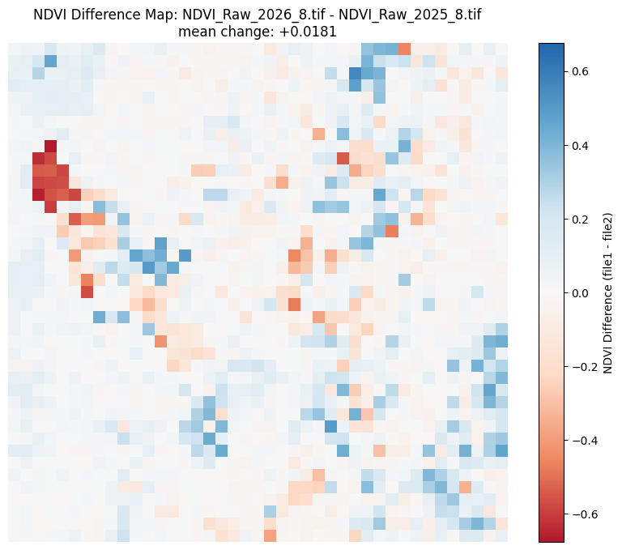

Monthly Report · Issue 09
August 2026
Vegetation dynamics across the Wasatch Front
By Scott Vars
Published September 12, 2026
Vegetation dynamics across the Wasatch Front
By Scott Vars
Published September 12, 2026
This map shows the raw vegetation index across the Wasatch Front for August 2026. The scene has a big divide between seemingly higher elevation, mountainous regions, and lower elevation or urban regions. This is quite the common trend so no worries there. The more mountainous regions seem to be pushing 0.5-0.6 in terms of NDVI, expected of healthy vegetation, while the lower elevations seem to be around the 0.2 range. Though there are quite a few more vegetated areas surrounding Utah Lake and the Salt Lake Valley. The lake values (Great Salt Lake and Utah Lake) sit at 0, as normal. However, it does seem like we have actually increased in vegetation compared to last month. This is quite surprising, as given the normal, seasonal trend of declining vegetation post June/July, especially quite rapidly at this time of year, this increase is unexpected. There are most certainly other factors at play here.

NDVI was slightly above average for August 2026, with a scene-mean anomaly of about +0.0210 relative to the historical August mean. This is a net-positive signal, and that is a good sign for the region. Of course, since this is a deseasonalized map, the typical seasonal patterns are removed, and we can see the true anomaly in the data. This is genuinely indicative of a greener August, compared to other Augusts, which given the past year's reports is a welcoming sight. However, the question is still what caused this increase. Considering how July unfolded, it was plausible to assume that the early green-up from earlier in the year had a lasting impact, finally starting to catch up and cause lessening vegetation, and it was plausible to also expect a similar trend in August. However, the higher than average anomaly suggests something different. While this could suggest that July was the anomalous month in terms of vegetation, corroborating outside data shows something different entirely: monsoon rains hit the Wasatch Front through July and intensified into August, with NOAA's Climate Prediction Center specifically forecasting above-normal August precipitation for Utah, and news reports of real storms (Park City picking up 2+ inches in 10 days, severe storms across northern Utah in mid-to-late August). So this isn't the compressed season "catching back up" on its own schedule, and it isn't the overshoot "continuing to deepen" either, rather it's an external forcing event (actual rain) partially reversing the July decline, a genuinely different mechanism than either scenario July's summary hedged between. This warrants further investigation into the month-over-month and year-over-year trends.
A sharp increase in vegetation levels across the Wasatch Front in August 2026, likely due to the recent monsoon rains.

Looking at the updated NDVI trends, August 2026 sits slightly above July, showing a strange reversal that is less known in previous years. This is a notable shift from the typical pattern. August is typically a time of slow decline or stagnant growth in vegetation. However, such a sharp increase is likely due to the monsoon rains that have been affecting the region, as the aforementioned section shows. This leaves us with a reasonable (though largely theoretical and unsupported) hypothesis or forecast that September may crash hard, as vegetation self-corrects to normal or slightly above-normal September levels, if the monsoon rains were truly an anomaly reserved just for August. However, it is important to note that this is completely speculative, and is contingent on the assumption that the monsoon rains will not continue into September. If the rains do continue, the vegetation may not self-correct as expected, and given external weather events predicted to happen across the Western United States (such as the super El Niño), it is still plausible that the monsoon rains will continue into September.

NDVI increased slightly from July to August 2026, with a mean change of 0.0169 across the Wasatch Front region, which once again shows the impact of the monsoon rains. This is the time of year that typically sees the steepest declines in vegetation throughout the year; August and September drop quite quickly as we transition to a colder, more Autumn environment. To see such a reversal, however small, is surprising. Once again, the likely explanation is the influence of the monsoon rains. There isn't much more to say about this phenomenon, but this seems to be the leading story.

Any sharp isolated changes over the open water of the Great Salt Lake, Bear Lake, or Utah Lake are likely remote sensing artifacts and should be disregarded. They are generally not real readings; when cross-checked against the raw NDVI maps, the lake pixels did not meaningfully change.
Compared to August 2025, NDVI is up meaningfully this year, with a mean change of +0.0181 across the Wasatch Front. Once again just another piece of evidence corroborating the impact of the monsoon rains. The entire report has shown meaningful gains in every single area. Though this now begs the question: what does this mean for the rest of the growing season? Will September follow suit, or will the decline step in? It also just shows the potential that this Superstorm season could bring, as large scale weather events can have a significant impact on the local environment.

August 2026 breaks the pattern the last several reports had been building toward. Rather than continuing July's steep decline, NDVI across the Wasatch Front rose on every measure in this report: +0.0169 month-over-month from July, +0.0181 year-over-year against August 2025, and +0.0210 above the 2013–2026 historical August mean. Raw values look much as they always do for late summer, with the high country holding in the 0.5–0.6 range and the valley floor near 0.2, but the direction of travel is the opposite of what August normally delivers. This is typically the steepest stretch of seasonal decline in the year, and instead the trend graphs show August 2026 sitting slightly above July, a reversal with little precedent in the 2013–2026 record.
The explanation appears to be external rather than phenological. Monsoon moisture reached the Front in July and intensified through August, with NOAA's Climate Prediction Center forecasting above-normal August precipitation for Utah and storms delivering real totals on the ground, including roughly two inches at Park City over ten days and severe storms across northern Utah in mid-to-late August. That makes this a forcing event partially reversing the July drop, not the compressed growing season catching back up on its own schedule, which is the mechanism the July report hedged between. What it means for September is genuinely open. If the monsoon pattern was confined to August, vegetation should correct sharply back toward normal September levels; if the rains persist, as the forecast El Niño conditions across the Western United States leave plausible, the gains may hold. September's data should settle it.
NDVI values derived from Landsat 8 TOA median composites at 5.5km resolution. Difference maps computed from raw NDVI prior to any normalization. Historical comparisons use the 2013–2026 Landsat archive.
Landsat 8/9 imagery courtesy of the U.S. Geological Survey via Google Earth Engine.
NOAA National Centers for Environmental Information, Monthly Climate Reports and drought summaries.